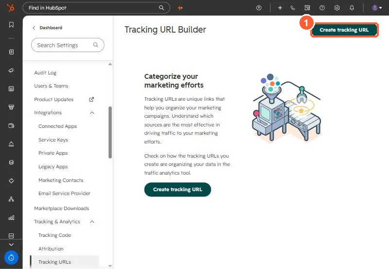

Short answer
Build tracked links in Settings, Tracking & Analytics, Tracking URLs. A campaign name is required, and the Source you pick decides which traffic source the visit lands in: Email marketing, Paid search, Organic social, Paid social, or Other campaigns with a custom source. Medium, term and content are optional. Copy the full or short URL from Actions. If a tracked link shows no sessions, widen the report's date range and check the destination page has the HubSpot tracking code.
1. Create a tracking URL
Open Settings, Tracking & Analytics, Tracking URLs and click Create tracking URL (1):


| Field | Required? | What it does |
|---|---|---|
| URL | Yes | The destination page |
Campaign (utm_campaign) | Yes | Used in several HubSpot reports and counts toward the campaign in the campaigns tool |
Source (utm_source) | Yes | Decides the traffic source bucket (next section) |
Medium (utm_medium) | No | The specific ad, post or email. For Other campaigns, shown when you drill into the campaign |
Term (utm_term) | No | Paid search keywords |
Content (utm_content) | No | Tells apart several ads or links on the same page |
Click Create, or Create and add another. To use it, hover the URL, open Actions and choose Copy tracking URL or Copy short URL. You can also build a tracking URL from a campaign so it uses that campaign's UTM value.
2. Pick the right source
| Source in the builder | Use it for |
|---|---|
| Email marketing | Links in a marketing email |
| Paid search | Paid search ads |
| Organic social | Unpaid social posts |
| Paid social | Paid social campaigns |
| Other campaigns | Anything else, with a custom UTM source such as FB_Campaign_1 |
These sources and their drill-downs feed the Original and Latest Traffic Source properties on contacts. See traffic source properties for what each drill-down holds.
- Social posts published through HubSpot already get tracking; you cannot add custom tracking URLs to them.
- Connected ad accounts can add UTMs automatically. See ads.
- Google Ads auto-tagging does not pass a campaign name HubSpot can read, so those visits show as paid search without a campaign. Add your own UTMs if you need the campaign.
3. When a tracked link shows nothing
- Date range: sessions only show if the link was visited during the report's time frame.
- Tracking code: the destination page must have the HubSpot tracking code. See installing the tracking code.
- Formatting: check the URL was copied whole, with its parameters.
Emails sent from non-HubSpot tools without link tracking, or HubSpot emails with source tracking turned off, show up as Direct traffic. For campaigns with contacts but no sessions, see campaigns and attribution.
4. What is changing for 2027
- AI Referrals use UTMs too. For the AI Referrals source, Drill-Down 2 holds
utm_campaign, so a tagged link that reaches people through an AI assistant still carries its campaign name. See traffic sources. - Campaigns tie it together. Building tracking URLs from a campaign keeps the UTM value consistent with the campaign's reporting.
Common questions
Is a campaign name required?
Yes. It is used in several reports and in the campaigns tool.
Why are my email visits in Direct traffic?
The email links had no tracking parameters, either because the email came from another tool or source tracking was off.
Can I add a tracking URL to a HubSpot social post?
No. HubSpot adds its own tracking to social posts it publishes.
Where is the short link?
Hover the tracking URL, open Actions, and choose Copy short URL.